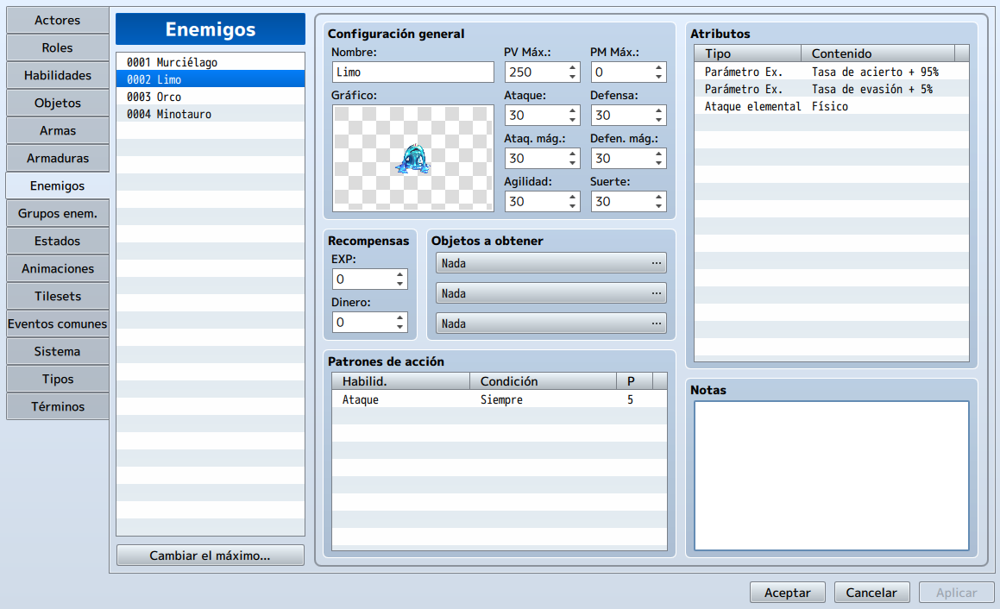
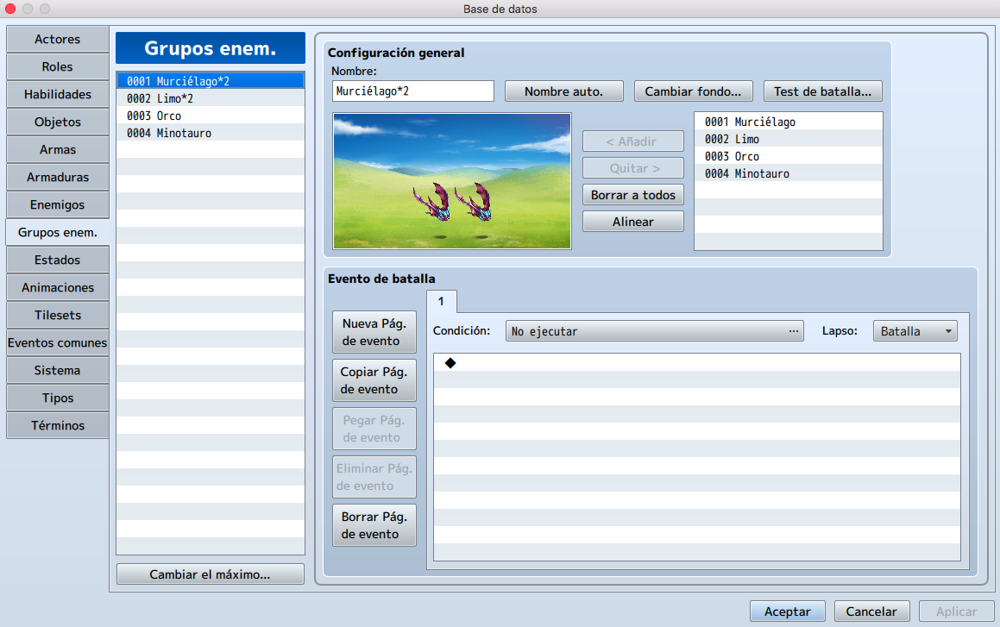
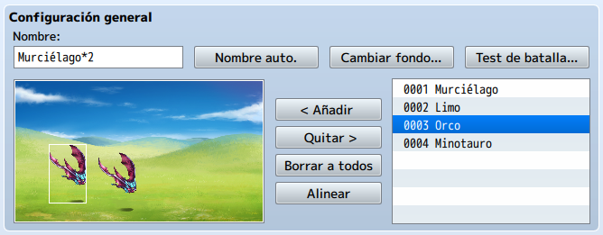
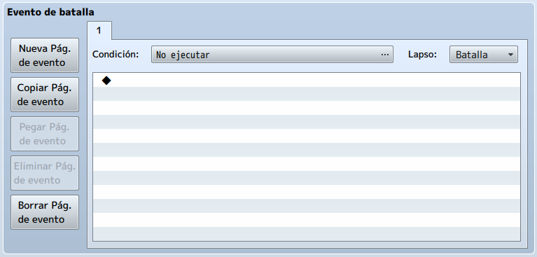
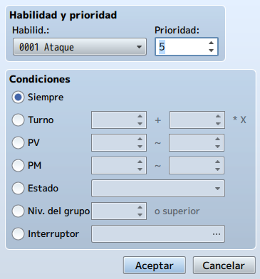
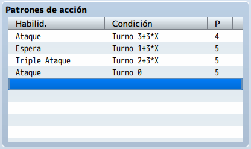

¿Qué sería de un videojuego sin sus antagonistas? Ciertamente, los enemigos tienen casi la misma importancia
que el personaje principal, debido a que la historia también se desarrolla en torno a ellos.
En este tema daremos un vistazo al concepto de enemigos y su importancia en los videojuegos y su papel en el
balanceo del juego, así como también los tipos de enemigos, ya sean enemigos especiales (jefes) y enemigos
de entorno (mobs).
Aprenderemos también a incluirlos con RPG Maker y a configurar sus diferentes variaciones para adaptarlos al
gameplay.
• Conocer la importancia de los enemigos en un videojuego.
• Aprender a darle un trasfondo narrativo a los enemigos especiales.
• Aprender a balancear la dificultad del juego con estos elementos.
• Aprender a agregar enemigos especiales con RPG Maker.
• Aprender a crear grupos de enemigos con RPG Maker.
• Aprender a configurar los diferentes tipos de enemigos.
A lo largo del desarrollo necesitaremos implementar NPCs enemigos con los que solo iniciaremos una batalla cuando interactuemos con ellos, además que, si queremos darle profundidad a nuestro juego, podemos darles un dialogo previo a la batalla y que luego, al ser derrotados, nos den mas información acerca de la historia.
Iremos a la Base de Datos y pincharemos en la pestaña Enemigos.

En esta figura, podemos ver a Limo (Slime), uno de los monstruos más débiles pero más icónicos del género
RPG japones.
Como los actores, los enemigos tienen ocho estadísticas. También otorgan recompensas, en experiencia y oro,
cuando son derrotados y pueden potencialmente dejar caer elementos para el jugador.
Podemos configurar hasta tres elementos para que caiga un enemigo, con una probabilidad de 1 / X (donde X
puede ser cualquier número entre 1 y 1000).
Los patrones de acción son los que dan al enemigo la mayor parte de su mordedura. El humilde Slime solo
puede usar el ataque básico que vimos anteriormente.
Slime tiene un 5% de probabilidad de fallar en sus ataques (95% de índice de acierto), así como un 5% de
probabilidad de esquivar ataques físicos (5% de evasión). Sus ataques infligen daño físico. Puede dar a los
enemigos resistencias e inmunidades a los tipos de daño y efectos de estado (definidos con los estados en
RMMV).
Podrías diseñar miles de monstruos, pero en realidad debes formar una tropa para que inicien un encuentro válido. La primera tropa de la lista es un par de murciélagos. Hablemos un poco sobre cada uno de los comandos disponibles.

• Configuración general

- Nombre automático: Nombra la tropa en función del número y tipo de monstruos
que contiene. Las tropas predeterminadas se nombran todas con el estilo de nombre automático.
- Cambiar fondo: Te permite cambiar el fondo durante las pruebas de batalla.
Esto no tiene ningún efecto en las batallas de tu juego.
- Test de batalla: Te permite crear un grupo de hasta cuatro actores equipados
con elementos que elijas para enfrentarte a la tropa actualmente seleccionada. Durante una
prueba de batalla, el grupo obtiene 99 copias de cada elemento de la base de datos.
- Añadir: Permite incluir un monstruo en una tropa, mientras si haces click en
un monstruo individual y presionas Eliminar lo borra de la tropa.
- Alinear: Sobre un monstruo colocado en una tropa te permite cambiar su
posición en la batalla. Esto es meramente estético y no tiene ningún efecto en el combate. Puedes
usar Alinear para devolver todos los monstruos a sus posiciones predeterminadas.
• Los eventos regresan con fuerza en la pestaña Grupos enemigos, en forma de Eventos de
batalla. Tienen seis Condiciones diferentes, disponibles en el menú
desplegable:

- No ejecutar: Si no usa ninguno de los condicionales, el evento por defecto es
No ejecutar. Como su propio nombre indica, un evento con No ejecutar nunca se activará.
- Fin del turno: Un evento con este condicional se activará después de que todos
los luchadores (grupo miembros y enemigos) han tomado su turno.
- Turno: Le permite establecer un turno determinado para activar el evento.
Verá que hay dos cuadros numéricos. El primero determina el turno en el que se desencadena el
evento, mientras que el segundo define el intervalo en el que se repite el evento. Puede dejar ese
espacio en blanco y el evento solo se activará una vez.
- PV del enemigo: Debe especificar un enemigo en particular dentro de la tropa
para este condicional. Cuando ese enemigo alcance el valor de PV que designaste, el evento se
activará.
- PV del actor: Igual que el anterior, pero para actores en lugar de enemigos.
Puedes declarar un actor que ni siquiera existe dentro de tu juego (siempre que el actor exista
dentro de la base de datos), para que lo tengas en cuenta.
- Interruptor: ¡Interruptores! Esto es realmente útil para un monstruo jefe,
por ejemplo, para que sea invencible a no ser que utilices un determinado arma. Puedes activar
un interruptor, en función de cualquier condición relevante en otro lugar, que haga que su
monstruo jefe sea una versión más débil de sí mismo (al reducir sus estadísticas de forma
permanente, por ejemplo.
• Lapso: Los eventos de batalla también tienen tres tipos de duración, que determinan
cuántas veces se activa el evento:
- Batalla: Un evento con el intervalo de batalla se activa solo una vez por
batalla, incluso si es las condiciones se siguen cumpliendo durante todo el combate.
- Turno: Un evento con este intervalo se activa una vez por turno, incluso si
sus condiciones se cumplen varias veces en el mismo turno.
- Momento: Un evento con este intervalo se activa repetidamente, una vez que se
cumplen las condiciones. Rara vez se usa este tipo de intervalo, ya que tiene una buena
posibilidad de hacer que su juego se cuelgue en un bucle infinito si falla.
Un buen deseo y también fácil de cumplir.
Echemos un vistazo más de cerca a Patrones de acción. Como probablemente ya habrás notado, muchas listas en
RMMV se pueden editar de la misma manera. Es decir, haga doble clic con el botón izquierdo o con el botón
derecho y seleccione Editar. Cuando haces lo mismo en el área de Patrones de acción de la página de un
enemigo, tenemos las siguientes opciones:

• Habilidad y prioridad:
- Habilidad: Es un menú desplegable que te permite seleccionar la habilidad que
quieres que use el enemigo.
- Prioridad: Es un valor que no hace nada en sí mismo. Sin embargo, cuando un
enemigo tiene múltiples habilidades, busca en sus valores de calificación para determinar qué
usar.
Supongamos que le damos a nuestro nuevo enemigo dos nuevas habilidades, Habilidad A y
Habilidad B. Entonces, ahora, el enemigo tiene Ataque, Habilidad A y Habilidad B en su lista de
Patrones de acción. Si dejamos la calificación de Ataque en 5, le damos a la Habilidad A una
calificación de 4 y a la Habilidad B una calificación de 3, así es como funcionan las
probabilidades:
◦ Ataque: El estándar/base para el patrón de acción, ya que tiene la
calificación más alta.
◦ Habilidad A: Se usará dos tercios del tiempo, en comparación con Ataque.
◦ Habilidad B: Se usará un tercio del tiempo, en comparación con Ataque.
No parece que esta explicación ayude, pero profundicemos. Si nuestro enemigo hipotético usa un
total de 100 acciones, podemos esperar aproximadamente el siguiente número de usos de cada
habilidad:
◦ Ataque: 50/100 usos.
◦ Habilidad A: 50*2/100*3 = 100/300. Cuando simplificamos eso, se
convierte en 33,3/100. Llamemos a eso 33/100.
◦ Habilidad B: 17/100 (para agregar hasta 100 acciones).
Si volvemos al conjunto anterior de viñetas, nos damos cuenta de que las matemáticas funcionan.
El ataque se usa con mayor frecuencia, seguido de la habilidad A y por último de la habilidad B.
Bien, ¿qué pasa si la diferencia de calificación es de más de dos puntos? Las habilidades que
tienen una calificación de más de dos puntos por debajo de la habilidad utilizable más alta nunca
se utilizarán. Nunca jamás.
¿Qué hay de esas condiciones? ¿Afectan la calificación? Ciertamente lo hacen. El juego busca
habilidades usables. Por lo tanto, si tiene una habilidad con calificación 9 y una condición
para usar solo en cada tercer turno, entonces no importa qué calificación tengan otras
habilidades en los otros turnos, que no sean terceros.
Tomemos nuestro ejemplo inicial y agreguemos una habilidad C que se basa en tal condicional:
◦ Habilidad C (Calificación 9): 100% de probabilidad de usar cada tercer
turno; 0% de probabilidad en cada turno que no sea tercero.
◦ Ataque (Calificación 5): 0% de probabilidad de usar en cada turno que
no sea el tercero; no hay posibilidad de usar cada tercer turno.
◦ Habilidad A (Calificación 4): 33% de probabilidad de usar en cada turno
que no sea el tercero; no hay posibilidad de usar cuando el turno de la Habilidad C llega.
◦ Habilidad B (Calificación 3): 17% de probabilidad de usar cuando la
Habilidad C no está disponible; nula en esas posibilidades cuando la habilidad C es
utilizable.
Siéntete libre de probar el sistema de clasificación por ti mismo, dando a los enemigos
habilidades adicionales y usando la Prueba de batalla para ver con qué frecuencia los Slimes
usan cada habilidad.
Nota: Para que esa habilidad se use en cada tercer turno, colocaría un 3 en el segundo cuadro numérico para el condicional del número de turno. Puedes determinar la primera vez que un enemigo usa una habilidad, según el número de turno que pones en el primer cuadro.
Mediante el uso hábil de condicionales, podemos crear enemigos que tengan Patrones de ataque predeterminados. Por ejemplo, a continuación mostramos un ejemplo de patrón de jefe.

Es para un enemigo que ataca en el primer turno, se salta un turno y luego usa un ataque de poder (en este
caso, Triple Ataque). Esa secuencia se repite hasta que el jugador o el jefe es derrotado. El salto de turno
es una habilidad que no tiene ningún efecto salvo mostrar un mensaje (en el caso de Espera de
MV: “
Nota: Naturalmente, si implementaras un patrón de este tipo en tu propio juego, querrás que el salto de turno muestre un mensaje de advertencia al jugador para que sepan que deben proteger (como en la opción del menú de batalla para mitigar el daño) o prepararse de otra manera para el ataque de poder.
Aumenta la tabla de enemigos como máximo a 40 y crea un nuevo enemigo.
Aumenta la pestaña de Tropas como máximo a 40 y crea una tropa que contenga un Slime y uno de los nuevos enemigos que crees.